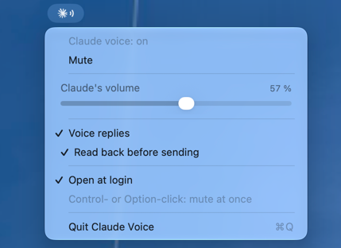

Claude Code speaks when it needs you
When a Claude Code session has a question, needs something only you can do, or finishes what you were waiting for, it says so out loud. Run several sessions at once and you no longer miss the one that is waiting. You can answer out loud too.

What it does
- One voice at a time. Several sessions queue instead of talking over each other.
- Claude's own volume. A slider for Claude only, never the Mac's volume.
- Voice replies. Claude asks "Reply?"; say yes, dictate, hear it read back, say "send".
- Mute from the menu bar, Control Center, or
/voice-alerts:mutein Claude Code. - Silent during calls. Muted while Teams, Slack, Zoom, FaceTime or a browser uses the microphone (not Ableton and other music apps).
- Missed while muted? The icon flashes red with the session's name; the menu lists what was not said.
Install
macOS 26 or later, with Claude Code. In Terminal:
curl -fsSL https://raw.githubusercontent.com/w0ts/claude-code-voice/main/install.sh | shThis installs the voice-alerts plugin into ~/.claude and the Claude Voice app into ~/Applications. Run it again to update; the app also updates itself from new releases.
Another Claude Code config folder: sh -s -- --config-dir ~/.claude-work at the end of the same command.
Control Center: Edit Controls…, then add Claude Voice.
Use
- Click the menu bar icon for the menu. Double-click (or Control-click) mutes at once.
- Voice replies: switch them on in the menu. macOS asks once for the microphone and speech recognition. Recognition runs on the Mac.
- Calls: "Mute during calls" in the menu, on by default. The call apps are listed in
~/.claude/voice-call-apps, one bundle ID prefix and a name per line; find an app's ID withosascript -e 'id of app "Name"'. - From a shell:
touch ~/.claude/voice-mutedmutes,rm ~/.claude/voice-mutedunmutes,echo 40 > ~/.claude/voice-volumesets Claude's volume to 40 %.